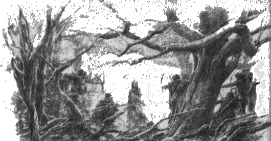
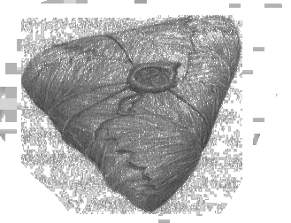

6
Şimdi hikaye Túrin’e dönüyor. Kral’ın kovalayacağı bir kanun kaçağı olduğunu düşünen Túrin, Doriath’ın kuzeyindeki bataklıklarda yaşayan Beleg’e dönmedi ve gizlice Korunaklı Topraklardan çıkarak Teiglin’in güneyindeki koruluklara geldi. Orada, Nirnaeth’e gelmeden, dağınık evlerde pek çok insan yaşıyordu; çoğunluğu Haleth’in halkındandı, ama beyleri yoktu ve avlanarak, çiftçilikle, yemişliklerde domuz besleyerek, ormanda yabandan çitlerle ayrılmış açıklıkları işleyerek yaşıyorlardı. Ama o zamanda çoğu yok edilmiş ya da Brethil’e kaçmıştı ve o bölge ork ya da haydut korkusu altında yaşıyordu. Çünkü o yıkım zamanlarında evsiz ve çaresiz insanlar yoldan çıkıyordu; savaş ve yenilginin, harap edilmiş toprakların kalıntılarıydı onlar; ve bazıları işledikleri kötü işler yüzünden yabana sürülmüştü. Avlanıyor, bulabildikleri yiyecekleri topluyorlardi; ama açlık ve başka ihtiyaçlar tarafından güdülürken çoğu soygunculuğa başlıyor ve zalimleşiyordu. Kışın, tıpkı kurtlar gibi korkuluyordu onlardan; ve evlerini savunmaya devam edenler onlara Gaur-waith, kurt-adam diyordu. Bu adamların altmış kadarı bir çete halinde toplanmış, Doriath’ın batı bataklıklarının ötesinde geziniyorlardı; ve hemen hemen orklar kadar nefret ediliyordu onlardan, çünkü aralarında katı yürekli, kendi türüne hınç duyan, toplum dışına itilmiş insanlar vardı.
En katı yüreklileri, bir kadını öldürdüğü için Dor-lómin’de aranan, Andróg adında biriydi; ve oradan gelen başkaları da vardı: çetenin en yaşlısı olan, Nirnaeth’ten kaçan ihtiyar Algund; sarı saçları ve güvenilmez, çakmak çakmak gözleri olan, iriyarı ve cüretli, ama Hador’un halkından Edain’in âdetlerini iyice unutmuş, kendine verdiği isimle Forweg. Ama hâlâ zaman zaman bilge ve cömert olabiliyordu; ve çetenin reisi oydu. Yaşadıkları sıkıntılar ve dövüşler yüzünden sayıları azalmış, elli kişi kadar kalmışlardı; ve ihtiyat kazanmışlar, hareket halinde de olsalar durmuş da, çevrelerine keşif kolları ya da nöbetçiler koymaya başlamışlardı. Böylece, onların bölgesine girdiği zaman Túrin’in hemen farkına varmışlardı.
Onu izlediler ve çevresinde halka oldular, öyle ki Túrin bir derenin yanındaki açıklığa girdiği zaman, aniden kendini yaylarını ve kılıçlarını çekmiş bir insan halkasının içinde buldu.
Bunun üzerine Túrin durdu, ama korku işareti vermedi. “Siz kimsiniz?” dedi. '“Yalnızca orklar insanlara pusu kurar sanıyordum; ama görüyorum ki yanılmışım.”
“Hatana esef edebilirsin,” dedi Forweg, “çünkü buralar bizim bölgemiz ve adamlarım başka insanların buralarda gezmesine izin vermez. Aksi halde, eğer yaşamları karşılığında fidye ödeyemezlerse, canlarını alırız.”
Bunun üzerine Túrin sertçe güldü: “Toplum dışına itilmiş bir kanun kaçağı olan benden fidye alamazsınız. Öldüğümde üzerimi arayabilirsiniz, ama sözlerimin doğruluğunu kanıtlamak size pahalıya patlar. Çoğunuz ilk ölenler olabilirsiniz.”
Bununla beraber, ölümü yakın görünüyordu, çünkü pek çok ok kirişine takılmış, kumandanın sözünü bekliyordu, ve Túrin gri gömleğinin ve pelerininin altına elf zincir zırhı giymiş olsa da, bazıları ölümcül bir hedef bulabilirdi. Düşmanlarının hiçbiri, çekilmiş kılıçla sıçrayabileceği kadar yakında değildi. Ama aniden Túrin eğildi, çünkü dere kıyısında, ayaklarının dibinde taşlar görmüştü. O anda, Túrin’in gururlu sözlerine kızan bir haydut onun yüzüne bir ok yolladı; ama ok Túrin’in başının üzerinden geçti ve Túrin salıverilen bir kiriş gibi sıçrayarak, okçuya büyük kuvvetle bir taş fırlattı ve hedefini tutturdu; ve kafası kırılan adam yere yıkıldı.
“Canlı kalırsam işinize daha çok yarayabilir, o talihsiz adamın yerini alabilirim,” dedi Túrin; ve Forweg’e dönerek şunu söyledi: “Burada kumandan sensen, adamlarının emir almadan ok fırlatmasına izin vermemelisin.”
“Vermiyorum,” dedi Forweg; “ama adam cezasını yeterince çabuk aldı. Sözümü daha iyi dinleyeceksen, onun yerine seni alabilirim.”
“Dinlerim,” dedi Túrin, “sen reis olduğun sürece ve bir reisin hakkı olduğu durumlarda. Ama çeteye yeni bir adam seçme kararı yalnızca ona ait değildir, herhalde. Bütün seslerin işitilmesi gerek. Burada beni kabul etmeyecek biri var mı?”
Bunun üzerine iki haydut seslerini yükseltti; ve bunlardan biri ölen adamın arkadaşıydı. Adı Ulrad’dı. “Bir çeteye girmek için tuhaf bir yol,” dedi, “en iyi adamlarımızdan birini öldürmek!”
“Meydan okunmadan değil,” dedi Túrin. “Ama, gel bakalım! Sırf silahlarınız ya da kendi kuvvetinizle, ikinize birden karşı koyarım. O zaman en iyi adamlarınızdan birinin yerini doldurabilir miyim, görürsünüz. Ama bu sınavda yay varsa, bende de olmalı.” Sonra onlara doğru yürüdü; ama Ulrad geriledi ve dövüşmeyi reddetti. Diğeri yayını yere fırlattı ve yürüyüp Túrin’i karşıladı. Bu adam Dor-lóminli Andróg’du. Túrin’in önünde durdu ve onu tepeden tırnağa süzdü.
“Hayır,” dedi sonunda, başını iki yana sallayarak. “Adamların bildiği gibi, korkak tavuk değilimdir; ama ben senin dengin değilim. Burada senin dengin olan kimse yok, bana göre. Kendi adıma, bize katılabileceğini söylüyorum. Ama gözlerinde tuhaf bir ışık var; sen tehlikeli bir adamsın. Adın nedir?”
“Ben kendime Neithan, yani Haksızlık Edilmiş, diyorum,” dedi Túrin, ve ondan sonra haydutlar ona Neithan dediler; ama haksızlığa uğradığını iddia etse de (aynı iddiaya sahip başka herkesi de can kulağıyla dinliyordu), hayatı ve evi hakkında başka hiçbir şey açıklamıyordu. Ama diğerleri onun yüksek bir konumdan düştüğünü görebiliyorlardı ve kendi silahları dışında hiçbir şeyi olmasa da, o silahlar elf demirciler tarafından yapılmıştı. Kısa zamanda onların takdirini kazandı, çünkü güçlü ve yiğitti ve ormanda onlardan daha becerikliydi ve ona güveniyorlardı, çünkü açgözlü değildi ve kendini pek düşünmezdi; ama, nadiren anlayabildikleri ani öfkeleri yüzünden ondan korkuyorlardı.
Túrin Doriath’a gidemiyor ya da gururu yüzünden gitmiyordu; Fdagund’un düşüşünden beri Nargothrond’a kimse kabul edilmiyordu. Brethil’deki Haleth’in düşük halkına gitmeye kendisi tenezzül etmezdi; ve Dor-lómin’e girmeye cesaret edemezdi, çünkü sıkı sıkı kuşatılmıştı ve o zamanlarda tek bir adamın Gölgeli Dağların geçitlerinden geçebileceğini düşünmüyordu. Bu yüzden Túrin haydutlarla kaldı, çünkü kim olursa olsun, birilerinin yoldaşlığı yabanın güçlüklerine tahammül etmeyi kolaylaştırıyordu; ve yaşamak istediği ve onlarla daima çatışma halinde olamayacağı için, yaptıkları kötü işleri engellemeye pek az çalıştı. Böylece, kısa zamanda katılaşarak, haşin ve sık sık zalim olan bu hayata alıştı, ama zaman zaman içinde acıma ve tiksinti duyguları uyanıyordu ve o zaman öfkesi tehlikeli oluyordu. Túrin o senenin sonuna kadar bu kötü ve tehlikeli yolda, kışın yokluğu ve açlığı içinde yaşadı, ta ki uyanış gelene ve güzel bir bahar başlayana elek.
Daha önce de belirtildiği gibi Teiglin’de sayıca az olsa da zorlu ve ihtiyatlı insanların yaşadığı evler vardı. Çeteyi hiç sevmeseler, onlara pek az acısalar da, sert kışlarda esirgeyebildikleri yiyecekleri Gaur-waith’in bulabileceği yerlere bırakıyorlardı; ve böylece, aç kalanların çete halinde saldırmasını engellemeyi umuyorlardı. Ama kuşlar ve hayvanlar bile haydutlardan daha fazla minnet duyuyorlardı ve daha çok köpekleri ve çalı çitleri sayesinde koruyorlardı kendilerini. Çünkü her evin çevresindeki açılmış arazinin etrafına büyük çalı çitler dikilmişti ve evlerin çevresinde de birer hendek ve kazık çit bulunuyordu; ve evden eve patikalar vardı ve gerektiğinde boru sesleri ile yardım çağırabiliyorlardı.
Ama, bahar geldiğinde Gaur-waith’in ormanda yaşayanların evlerinin bu kadar yakınında kalması tehlikeli oluyordu, çünkü toplanıp onları avlayabilirlerdi; ve bu yüzden Túrin, Forweg’in onları uzaklara götürmemesine şaşıyordu. Güneyde, hiçbir insanın kalmadığı yerlerde daha fazla yiyecek ve av, daha az tehlike vardı. Sonra bir gün Túrin, Forweg ile arkadaşı Andróg’un orada olmadığını fark etti; ve nerede olduklarını sordu, ama yoldaşları güldüler.
“Kendilerine özel bir iş peşinde, herhalde,” dedi Ulrad. “Çok geçmeden dönerler ve sonra yola çıkarız. Belki, aceleyle; çünkü peşlerinden arı oğulu getirmezlerse şanslı sayılırız.”
Güneş parlıyordu ve taze yapraklar yeşildi; haydutların pis kampı Túrin’in sinirlerini bozuyordu, yalnız başına ormanın içlerine doğru yürüdü. İstemeden Saklı Krallık’ı hatırladı ve eski ve hemen hemen unutulmuş bir dilin yankıları olarak, Doriath çiçeklerinin isimlerini duyar gibi oldu. Ama aniden bağırışlar işitti ve genç bir kadın koşarak bir fındık çalısından çıktı; dikenler giysilerini yırtmıştı ve büyük korku içindeydi, sendeledi ve nefes nefese yere düştü. Bunun üzerine Túrin kılıcını çekerek çalıya doğru fırladı ve kadının peşinden çalıdan çıkan adamı biçti; ve ancak son anda adamın Forweg olduğunu gördü.
Ama o durmuş şaşkınlık içinde çimenlerdeki kana bakarken, Andróg çıktı ve hayretler içinde durdu. “Kötü iş, Neithan!” diye bağırdı ve kılıcını çekti; ama Túrin’in kanı soğudu ve Andróg’a şöyle dedi: “Orklar nerde peki? Kadına yardım etmek için onlardan hızlı mı koştun?”
“Orklar mı?” dedi Andróg. “Aptal! Bir de kendine kanun kaçağı diyorsun. Kanun kaçakları kendi ihtiyaçları dışında kanun tanımaz. Sen kendi işine bak, Neithan ve bırak biz de kendi işimize bakalım.”
“Öyle yapacağım,” dedi Túrin. “Ama bugün yollarımız kesişti. Ya kadını bana bırakırsın, ya da Forweg’e katılırsın.”
Andróg güldü. “Madem öyle diyorsun, öyle olsun,” dedi. “Seninle tek başıma boy ölçüşebileceğimi iddia etmiyorum; ama arkadaşlarımız bu ölümü iyi karşılamayabilir.”
Sonra kadın ayağa kalktı ve elini Túrin’in koluna koydu. Önce kana, sonra Túrin’e baktı ve gözlerinde sevinç vardı. “Öldür onu, beyim!” dedi. “Onu da öldür! Sonra da benimle gel. Onların kellelerini getirirsen, babam Larnach memnun olur. İki ‘kurt-başı’ için iyi ödül vermişliği vardır.”
Ama Túrin Andróg’a şöyle dedi: “Kadının evi uzak mı?”
“Bir mil kadar,” diye yanıt verdi Andróg, “şu tarafta, çitle çevrili bir evde. Dışarıda geziniyordu.”
“O zaman çabuk git,” dedi Túrin, kadına dönerek. “Babana, sana daha iyi göz kulak olmasını söyle. Ama ne babanın lütfunu kazanmak için, ne de başka bir şey uğruna kendi arkadaşlarımın kafalarını kesmem.”
Sonra kılıcını kınına soktu. “Gel!” dedi Andróg’a. “Geri döneceğiz. Ama reisini gömmek istiyorsan, kendi başına yapmak zorundasın. Acele et, çünkü kovalamaca başlayabilir. Forweg’in silahlarını da getir!”
Kadın ormana girdi ve ağaçlar onu gizleyene kadar defalarca dönüp arkasına baktı. Sonra Túrin daha fazla konuşmadan yoluna gitti ve Andróg onun uzaklaşmasını izledi, sonra bir bilmece hakkında düşünen biri gibi kaşlarını çattı.
Túrin haydutların kampına döndüğünde onları huzursuz ve sinirli buldu; çünkü şimdiden orada çok fazla kalmışlardı, iyi korunan evlerin yakınındaydılar ve Forweg’in aleyhinde homurdanıyorlardı. “Bizim zararımıza tehlikeye atılıyor,” diyorlardı; “ve onun keyfinin bedelini başkaları ödemek zorunda kalabilir.”
“O zaman yeni bir reis seçin!” dedi Túrin, önlerinde durarak. “Artık Forweg size önderlik edemez; çünkü o öldü.”
“Bunu nereden biliyorsun?” dedi Ulrad. “Aynı kovandan bal mı almaya çalıştın? Arılar onu soktu mu?”
“Hayır,” dedi Túrin. “Bir iğne yeterli oldu. Onu ben öldürdüm. Ama Andróg’u esirgedim ve yakında döner.” Sonra olan biten her şeyi anlattı, bu tür işler yapanları azarladı; ve o daha konuşurken, Andróg Forweg’in silahlarını taşıyarak geri döndü. “Gördün mü, Neithan?” diye bağırdı. “Alarm falan verilmedi. Belki kadın seninle bir daha karşılaşmayı umuyordur.”
“Bana sataşacak olursan,” dedi Túrin, “kelleni kadından esirgediğim için pişman olacağım. Şimdi hikayeni anlat ve kısa kes.”
Sonra Andróg olanları yeterince gerçekçi bir biçimde anlattı. “Şimdi, Neithan’ın orada ne işi olduğunu merak ediyorum,” dedi. “Bizimle ilgili bir iş değil, anlaşılan. Çünkü ben geldiğimde, o Forweg’i çoktan öldürmüştü. Kadın bundan pek hoşlandı ve onunla gitmek için yalvardı, çeyiz olarak da kellelerimizi istedi. Ama Neithan onu istemedi ve kadını yoluna yolladı; bu yüzden, reise ne garezi vardı, tahmin edemiyorum. Kellemi omuzlarımda bıraktı ve bunun için minnettarım, ama çok da kafam karıştı.”
“O zaman, Hador’un halkından olduğun iddianı reddediyorum,” dedi Túrin. “Sen daha çok lanetli Uldor’a aitsin ve Angband’da iş aramalısın. Ama şimdi beni dinleyin!” diye bağırdı hepsine. “Size şu seçenekleri tanıyorum: Forweg’in yerine beni reis kabul edeceksiniz, ya da gitmeme izin vereceksiniz. Artık bu çeteyi ben yöneteceğim, ya da onu terk edeceğim. Ama beni öldürmek istiyorsanız, öldürün! Ölene kadar... ya da siz ölene kadar hepinizle dövüşürüm.”
Bunun üzerine pek çok adam silahlarını kaptı, ama Andróg bağırdı: “Hayır! Onun esirgediği kelle akılsız değildi. Dövüşürsek, biz aramızdaki en iyi adamı öldürene dek boş yere birden çok kişi ölecek.” Sonra kahkaha attı. “O bize katılırken olduğu gibi oldu yine. Kendine yer açmak için öldürüyor. Önceden sonucu iyi olduysa, şimdi de olabilir; ve o bizi, başka adamların çöplüklerinde eşinmekten daha iyi talihe götürebilir.”
Ve ihtiyar Algund şöyle dedi: “Aramızdaki en iyi adam. Cesaret edebilsek, bizim de aynısını yapacağımız zamanlar vardı; ama çok şeyi unuttuk. O, sonunda bizi memlekete götürebilir.”
Bunun üzerine, Túrin’in aklına, bu küçük çeteden yola çıkarak kendine özgür bir beylik kurabileceği geldi. Ama Algund ile Andróg’a baktı, ve şöyle dedi: “Memleket mi dedin? Arada yüksek ve soğuk Gölge Dağları yükseliyor. Arkalarında Uldor’un halkı, çevrelerinde de Angband’ın alayları var. Bu tür şeyler, yedi adamın yedi katı sizi ürkütmüyorsa, o zaman sizi memlekete doğru götürebilirim. Ama, ölmeden ne kadar uzağa gidebiliriz?” Herkes sustu. Sonra Túrin yine konuştu. “Beni reisiniz olarak kabul ediyor musunuz? O zaman sizi ilk önce insanların evlerinden uzağa, yabana götüreceğim. Orada daha iyi talih bulabiliriz de, bulamayabiliriz de; ama en azından kendi türümüzün nefretini kazanmayız.”
Sonra, Hador’un halkından olanlar onun çevresinde toplandılar ve onu reis kabul ettiler; ve daha az iyi niyetli olanlar da kabul ettiler. Ve Túrin onları hemen alıp, o yöreden uzaklaştırdı.
Thingol, Túrin’i Doriath’ta ve onun sınırlarına yakın topraklarda aramak için pek çok haberci yollamıştı; ama Túrin’in kaçtığı sene onu boş yere aradılar, çünkü onun haydutların ve insanların düşmanlarının yanında olduğunu kimse bilmiyordu ya da tahmin edememişti. Kış geldiğinde, Beleg dışında hepsi Kral’ın yanına döndüler. Tüm diğerleri gittikten sonra, Beleg tek başına aramaya devam etti.
Ama Dimbar’da, Doriath’ın kuzeyindeki bataklıklarda işler kötüye gitmişti. Artık orada Ejder-miğferi savaşta görülmez olmuştu ve Sağlamyay’ın eksikliği de hissedilmişti; ve Morgoth’un hizmetkarları yüreklenmiş, sayıları ve cüretleri artmıştı. Kış gelip geçmiş, baharla saldırıları da yenilenmişti: Dimbar istila edilmişti ve Brethil insanları korkuyordu, çünkü artık güney dışındaki tüm sınırlarında şer dolaşıyordu.
Túrin kaçalı neredeyse bir sene olmuştu ve Beleg devamlı umut kaybederek, hâlâ onu arıyordu. Dolanırken kuzeye, Teiglin Geçitlerine geldi ve orada, Taur-nu-Fuin’den yeni ork akınları olduğu haberini alarak geri döndü; ve tesadüf eseri, Túrin o bölgeden ayrıldıktan kısa süre sonra ormancıların evlerine geldi. Orada, aralarında dolaşan tuhaf bir öykü duydu. Ormanda uzun boylu ve bey gibi bir insan, ya da bazılarına göre bir elf savaşçısı ortaya çıkmıştı ve Gaur-waith’ten birini öldürmüş, onların kovaladığı Larnach’ın kızını kurtarmıştı. “Çok gururluydu,” dedi Larnach’ın kızı Beleg’e, “bana bakmaya bile tenezzül etmeyen parlak gözleri vardı. Ama takipçilerine Kurt-adamlar diyordu ve yakında duran birini öldürmedi ve adını biliyordu. Adam ona Neithan diyordu.”
“Bu bilmeceyi çözebildin mi?” diye sordu Larnach elfe.
“Heyhat, evet,” dedi Beleg. “Bana anlattığınız insan aradığım kişidir.” Ormancılara Túrin hakkında başka bir şey söylemedi; ama onları kuzeyde toparlanan şerre karşı uyardı. “Yakında orklar dayanamayacağınız kadar muazzam bir güçle bu bölgeyi istila edecekler,” dedi. “Nihayetinde bu sene ya özgürlüğünüzden ya da canlarınızdan vazgeçmeniz gerekecek. Henüz vakit varken Brethil’e gidin!”
Sonra Beleg aceleyle yoluna gitti ve haydutların yataklarına ya da nereye gittiklerine dair işaret aradı. Bunları kısa zamanda buldu; ama Túrin günlerce uzaktaydı ve ormancıların takip etmesinden korkarak hızlı hareket ediyor, onu izlemeye çalışanları hezimete uğratmak ya da şaşırtmak için bildiği bütün yolları kullanıyordu. Adamlarını batıya, ormancılardan ve Doriath sınırlarından uzağa götürüyordu; ve sonunda Sirion ve Valeg Vadileri arasında yükselen büyük yaylaların kuzey ucuna geldiler. Orada arazi daha kuruydu ve orman bir sırtın kenarında aniden sona eriyordu. Sırtın aşağısında, Teiglin Geçitlerinden yükselen ve kıraç toprakların batı eteklerinden geçip Nargothrond’a giden kadim Güney Yolu görülebiliyordu. Haydutlar bir süre orada ihtiyatla yaşadılar ve nadiren art arda iki gece aynı kampta kaldılar; ve kalışlarından ya da gidişlerinden pek az iz bıraktılar. Bu yüzden Beleg bile boş yere aradı onları. Okuyabildiği işaretlere ya da konuşabildiği yabanıl yaratıklar arasında dolaşan, oradan geçen insanlar hakkındaki söylentilere bakarak, sık sık onlara yaklaşıyordu, ama her seferinde yataklarını boş buluyordu; çünkü haydutlar gece gündüz nöbet tutuyordu ve yaklaşan birine dair söylenti duydukları her seferinde hemen kalkıp uzaklaşıyorlardı. “Heyhat!” diye bağırdı Beleg. “Bu insan çocuğuna orman ve arazi becerilerini ziyadesiyle iyi öğretmişim! Bu çetenin bir elf birliği olduğunu düşünür kişi.” Ama onlar da göremedikleri, ama aynı zamanda silkeleyemedikleri, yorulmak bilmez biri tarafından izlendiklerini fark etmişlerdi; ve huzursuzlanmışlardı.
Bundan kısa süre sonra, Beleg’in korktuğu gibi orklar Brithiach’ı aştı ve Beleg’in Brethilli Handir’in halkından toplayabildiği gücün direnişine rağmen, yağma peşinde Teiglin Geçitlerinden güneye geçtiler. Ormancıların çoğu Beleg’in öğüdünü tutmuş, kadınlarını ve çocuklarını Brethil’den sığınak talep etmeye yollamışlardı. Bunlar ve onların eşlikçileri tam zamanında geçitlerden aşarak kaçtılar; ama arkadan gelen silahlı adamlar orklarla karşılaştılar ve adamlar yenildiler. Birkaçı savaşa savaşa geçip Brethil’e vardı, ama çoğu öldürüldü ya da yakalandı ve orklar onların evlerine geldiler, yakıp yağmaladılar. Sonra, yolu bulmak için hemen batıya döndüler, çünkü şimdi ganimetleri ve tutsakları ile birlikte hızla kuzeye dönmek istiyorlardı.
Ama haydutların izcileri kısa zamanda onların farkına vardı; ve tutsaklar pek umurlarında olmasa da, Ormancılardan edinilmiş ganimet açgözlülüklerini uyandırdı. Túrin’e, sayılarını öğrenmeden kendilerini orklara göstermek tehlikeli olacakmış gibi geliyordu; ama haydutlar onu dinlemediler, çünkü yabanda çok yokluk çekiyorlardı ve bazıları onun önderliğini kabul ettiğine pişman olmaya başlamıştı bile. Bu yüzden, Túrin tek yoldaş olarak Orleg’i alarak orkları gözetlemeye gitti; ve çetenin komutasını Andróg’a vererek, onu ikisi yokken iyice gizlenip, orada kalmakla görevlendirdi.
Şimdi ork ordusu haydutların çetesinden çok daha kalabalıktı, ama orkların gelmeye nadiren cesaret edebildikleri topraklardaydılar ve aynı zamanda, yolun ötesinde Nargothrond izcileri ve casusları tarafından izlenmekte olan Talath Dirnen’in, Korunaklı Ova’nın uzandığını biliyorlardı; tehlikeden korktuklarından ihtiyatlı davranıyorlardı ve yürüyüş kollarının iki yanındaki ağaçlıklarda izcileri gizlice ilerliyordu. Túrin ile Orleg bu şekilde keşfedildi, çünkü onlar saklanmış yatarken üç izci onlara rastladı; ve ikisini öldürmelerine rağmen üçüncüsü, Golug! Golug! diye bağırarak kaçtı. Noldor’a verdikleri isim buydu. Orman bir anda, sessizce yayılan ve dört bir yanda avlanan orklarla doldu. Bunun üzerine kaçma umudunun pek olmadığını gören Túrin, en azından onları aldatmayı ve adamlarının saklanma yerinden uzağa götürmeyi düşündü; ve Golug! haykırışlarından, orkların Nargothrond casuslarından korktuklarını anlayarak, Orleg’le birlikte batıya kaçtı. Orklar hemen peşlerine düştüler ve ikisi dönüp şaşırtmaca yaparak sonunda ormandan çıkmak zorunda kaldılar; ve o zaman görüldüler ve yolu aşmaya çalışırlarken Orleg pek çok okla vuruldu. Ama Túrin elf zırhı sayesinde kurtuldu ve tek başına ötedeki yabanlıklara kaçtı; hızı ve becerisi sayesinde düşmanlarını atlattı, ona yabancı toprakların derinliklerine kaçtı. Sonra, Nargothrond elflerinin uyanacağından korkan orklar tutsaklarını öldürdüler ve hızla kuzeye yollandılar.
Üç gün sonra, Túrin ile Orleg dönmeyince haydutların bazıları saklandıkları mağaradan çıkmak istedi; ama Andróg buna karşı çıktı. Ve tartışmanın ortasında aniden aralarında gri bir şekil belirdi. Beleg sonunda onları bulmuştu. Ellerinde silah olmadan öne çıktı ve avuçlarını onlara doğru çevirerek kaldırdı; ama onlar korkuyla ayağa fırladılar ve Andróg arkadan yaklaşarak Beleg’in üzerine bir ilmek attı, çekerek kollarını bağladı.
“Konuk istemiyorsanız daha iyi nöbet tutmalısınız,” dedi Beleg. “Neden beni bu şekilde karşılıyorsunuz? Ben dost olarak geldim ve bir dostumu arıyorum yalnızca. Ona Neithan dediğinizi duydum.”
“Burada değil,” dedi Ulrad. “Ama bizi uzun zamandır gözetlemiyorsan, o ismi nereden biliyorsun?”
“Uzun zamandır bizi gözetliyordu,” dedi Andróg. “Bizi izleyip duran gölge bu. Şimdi belki gerçek amacını öğreniriz.” Sonra adamlara Beleg’i mağaranın yanındaki ağaca bağlamalarını söyledi ve Beleg’in elleri ve ayakları sıkı sıkı bağlandıktan sonra onu sorguladılar. Ama Beleg tüm sorulara tek bir yanıt veriyordu: “Ormanda ilk kez karşılaştığımızdan beri bu Neithan’ın dostuyum ve o zamanlar daha çocuktu. Onu sevgimden arıyorum ve ona iyi haberler getirdim.”
“Onu öldürelim ve casusluğundan kurtulalım,” dedi Andróg gazapla; ve Beleg’in büyük yayına baktı ve ona gıpta etti, çünkü o da okçuydu. Ama daha iyi yürekli olanlar ona karşı çıktılar ve Algund şöyle dedi: “Reis geri dönebilir; ve o zaman, aynı anda hem dostundan, hem de iyi haberlerden mahrum bırakıldığını öğrenince, buna esef edebilir.”
“Ben bu elfin hikayesine inanmıyorum,” dedi Andróg. “O Doriath Kralı’nın casusu. Ama gerçekten de haber getirmişse, onları bize söylemeli; ve o haberlerin onun yaşamasına izin vermemiz için yeterli sebep olup olmadığına biz karar vermeliyiz.”
“Ben reisinizi bekleyeceğim,” dedi Beleg.
“Konuşana kadar orada duracaksın,” dedi Andróg.
Sonra, Andróg’un kışkırtması üzerine, yemek ve su vermeden Beleg’i ağaca bağlı bıraktılar ve yakına oturup yiyip içtiler; ama onunla daha fazla konuşmadılar. İki gün ve iki gece bu şekilde geçtikten sonra öfkelendiler ve korkuya kapıldılar ve gitmek istediler; ve artık çoğu elfi öldürmeye hazırdı. Gece çökerken hepsi onun çevresinde toplandı ve Ulrad mağara ağzında yaktıkları küçük ateşten bir dal getirdi. Ama o anda Túrin döndü. Adeti olduğu üzere sessizce yaklaşarak, adam halkasının arkasındaki gölgelerde durdu ve yanan dalın ışığında Beleg’in perişan yüzünü gördü.
Sonra, sanki ona bir ok saplandı ve uzun zamandır dökmediği donmuş gözyaşları aniden erimiş gibi gözleri doldu. Yerinden fırladı ve ağaca koştu. “Beleg! Beleg!” diye bağırdı. “Buraya nasıl geldin? Ve neden bu şekilde duruyorsun?” Hemen dostunun bağlarını kesti ve Beleg onun kollarına yığıldı.
Túrin adamlarının anlattıklarını dinledikten sonra kızdı ve üzüldü; ama başta yalnızca Beleg’le ilgilendi. Sahip olduğu tüm beceriyle onun bakımını yaptıktan sonra, ormandaki hayatını düşündü ve öfkesi kendine döndü. Çünkü sık sık haydutların yataklarının yakınında yakalanan yabancılar öldürülmüş ya da onlara pusu kurulmuştu ve Túrin onlara engel olmamıştı; ve sık sık Kral Thingol ve Gri Elfler hakkında kendisi de kötü konuşmuştu, bu yüzden, onlara düşman olarak davranılırsa, suçu Túrin de paylaşmalıydı. Sonra acı acı adamlara döndü. “Zalim davrandınız,” dedi, “hem de gerekmediği halde. Şu ana dek hiçbir zaman bir tutsağa işkence etmedik; ama sürdüğümüz hayat bizi bu ork-işine getirdi işte. Yalnızca kendimize hizmet ederek ve yüreklerimizde nefret besleyerek yaptığımız tüm işler kanunsuz ve nafile oldu.” Ama Andróg şöyle dedi: “Ama kendimize hizmet etmeyeceksek, kime hizmet edeceğiz? Herkes bizden nefret ederken, biz kimi seveceğiz?”
“En azından ben bir daha elflere ve insanlara el kaldırmayacağım,” dedi Túrin. “Angband’ın yeterince hizmetkarı var. Bu yemini başkaları benimle etmezse, ben yalnız yürüyeceğim.”
Bu sırada Beleg gözlerini açtı ve başını kaldırdı. “Yalnız değil!” dedi. “Artık sonunda haberlerimi söyleyebilirim. Sen kanun kaçağı değilsin ve Neithan ismi sana hiç yakışmıyor. Sende bulunan hata affedildi. Şerefe ve Kral’ın hizmetine çağırmak için bir sene boyunca aradık seni. Ejder-miğferi’nin eksikliği çok uzun süredir hissediliyor.”
Ama Túrin bu haberi alınca sevinmedi ve uzun süre sessizlik içinde oturdu; çünkü Beleg’in sözleri üzerine bir gölge çökmesine sebep olmuştu. “Bu gece geçsin,” dedi sonunda. “Sonra seçimimi yapacağım. Seçimim ne olursa olsun, yarın buradan ayrılacağım; çünkü bizi arayan herkes iyi dileklerle gelmiyor.”
“Hayır, hiçbiri,” dedi Andróg ve kötü kötü Beleg’e baktı.
Sabahleyin, eskilerin elf halkına özgü şekilde yaraları hızla iyileşen Beleg, Túrin’le yalnız konuştu.
“Getirdiğim haberler için daha fazla sevinç beklemiştim,” dedi. “Artık Doriath’a dönersin, kuşkusuz?” Ve elinden gelen her şekilde, Túrin’in böyle yapması için yalvardı; ama o ne kadar ısrar ederse, Túrin o kadar tereddüt ediyordu. Bununla beraber, Thingol’un hükmü konusunda Beleg’i inceden inceye sorguladı. Beleg ona bildiği her şeyi anlattı; ve sonunda Túrin şöyle dedi: “O zaman Mablung, eskiden göründüğü gibi, dostum olduğunu kanıtladı, öyle mi?”
“Daha ziyade, gerçeğin dostu olduğunu,” dedi Beleg, “ve sonuçta, en iyisi buydu; gerçi, Nellas’ın tanıklığı olmasa hüküm bu kadar adil olmazdı. Neden, neden, Túrin, Mablung’a Saeros’un saldırısından bahsetmedin? Her şey farklı olabilirdi. Hem,” dedi, mağaranın ağzının yakınında yayılmış adamlara bakarak, “miğferin hâlâ dik olabilirdi, bu şekilde düşmezdi.”
“Buna düşüş diyorsan, öyle olabilirdi,” dedi Túrin. “Olabilirdi. Ama böyle oldu; sözcükler boğazıma tıkandı. Yapmadığım bir iş hakkında bana soru sormadan gözlerinde azar vardı. Elf Kralı’nın söylediği gibi, benim İnsan yüreğim gururludur. Hâlâ da öyledir, Beleg Cúthalion. Henüz Menegroth’a dönmeme ve ıslah olmuş dikbaşlı bir çocuğa yöneltilene benzer acıma ve af dolu bakışlara tahammül etmeme gelemez. Ben affetmeliyim, af görmeli değil. Ve artık kendi türüme göre çocuk değil erkeğim; hem de, kaderim sonucu, zorlu bir erkek.”
Bunun üzerine Beleg endişelendi. “Ne yapacaksın peki?” diye sordu.
“Serbestçe dolaşacağım,” dedi Túrin. “Ayrılırken, Mablung bu dileğimi bana bağışladı. Thingol’un lütfunun, düşüşümde edindiğim bu yoldaşlara kadar uzanacağını sanmıyorum; ama onlar benden ayrılmak istemiyorlarsa, ben de henüz onlardan ayrılmayacağım. Onları, en kötüsünü bile, kendi tarzımda biraz seviyorum. Onlar benim kendi türümden ve her birinin içinde zamanla büyüyebilecek biraz iyilik var. Onların da bana destek olacağını düşünüyorum.”
“Benimkinden farklı gözlerle görüyorsun,” dedi Beleg. “Onları kötülükten vazgeçirmeye çalışırsan, seni hayal kırıklığına uğratacaklar. Onlardan şüphe ediyorum, en çok da bir tanesinden.”
“Bir elf insanları nasıl yargılayabilir ki?” dedi Túrin.
“Kim işlemiş olursa olsun, tüm diğer fiilleri yargıladığı gibi,” diye yanıt verdi Beleg, ama daha fazlasını söylemedi, ona kötü muamele edilmesinin asıl sorumlusu olan Andróg’un kötülüğünden de bahsetmedi; çünkü Túrin’in ruh halini sezdiğinden, ona inanmamasından, eski dostluklarının zarar görmesinden ve Túrin’in kötü alışkanlıklarına geri dönmesinden korkuyordu.
“Serbestçe dolaşmak, dedin, Túrin, dostum,” dedi. “Ne demek istedin?”
“Kendi adamlarıma önderlik etmek ve kendi tarzımda savaşmak istiyordum,” diye yanıt verdi Túrin. “Ama en azından bu konuda fikrim değişti: İnsanların ve elflerin düşmanlarına karşı olanların dışındaki her darbeye pişman oldum. Ve her şeyden öte, senin yanımda olmanı isterim. Benimle kal!”
“Eğer ki senin yanında kalırsam, bana bilgelikten ziyade sevgi yol gösterir,” dedi Beleg. “Yüreğim Doriath’a dönmemiz gerektiği konusunda uyarıyor beni. Başka her yerde önümüzde bir gölge buluruz.”
“Ben yine de oraya gitmeyeceğim,” dedi Túrin.
“Heyhat!” dedi Beleg. “Ama kendi basiretine rağmen oğlunun dileğine rıza gösteren sevgi dolu bir baba gibi, ben de senin dileğine boyun eğeceğim. Sen istersen kalacağım.”
“Bu gerçekten çok iyi!” dedi Túrin. Sonra, kendisi de gölgenin farkına varmış gibi aniden sustu ve geriye dönmesine izin vermeyen gururu ile mücadele elti, Uzun süre, geride kalan seneler hakkında düşünerek oturdu.
Aniden düşüncelerinden sıyrılarak Beleg’e baktı ve şöyle dedi: “Nasıl olduğunu unutmuş olsam da, adını söylediğin elf kızı: zamanlı tanıklığı için ona çok şey borçluyum; ama onu hatırlayamıyorum. Neden benim yolumu gözlüyormuş?” Bunun üzerine Beleg tuhaf tuhaf ona baktı. “Hakikaten neden?” dedi. “Túrin, her zaman yüreğinle ve yarım aklınla mı yaşadın? Çocukken koruluklarda Nellas’la yürürdün.”
“Çok uzun zaman önce olmalı,” dedi Túrin. “Ya da, artık çocukluğum öyle geliyor ve üzerine bir pus örtülmüş —babamın Dor-lómin’deki evinin anısı dışında. Bir elf kızı ile neden yürüyeyim ki?”
“Onun öğretebileceklerini öğrenmek için belki,” dedi Beleg, “yalnızca birkaç orman çiçeğinin elf dilindeki isimleri olsa dahi. En azından onların isimlerini unutmadın. Heyhat! Orta Dünya’da seninkilerden başka ızdıraplar, silahlar tarafından açılmamış yaralar var, Ey İnsan çocuğu. Doğrusu şu ki, elflerin ve insanların bir araya gelmemesi, birbirine karışmaması gerektiğini düşünmeye başlıyorum.”
Túrin hiçbir şey söylemedi, ama sözlerindeki bilmeceyi orada okuyabilecekmiş gibi uzun uzun Beleg’in yüzüne baktı. Doriathlı Nellas onu bir daha hiç görmedi ve Túrin’in gölgesi onun üzerinden geçip gitti. Sonra Beleg ile Túrin başka meselelere döndüler ve nerede yaşamaları gerektiğini tartıştılar. “Eskiden birlikte yürüdüğümüz kuzey bataklıklarındaki Dimbar’a dönelim!” dedi Beleg hevesle. “Orada bize ihtiyaç var. Zira son zamanlarda orklar Taur-nu-Fuin’den çıkıp aşağılara inmenin yolunu bulmuşlar, Anach Geçidi’nde bir yol açmışlar.”
“Hatırlamıyorum,” dedi Túrin.
“Hayır, hiçbir zaman sınırdan fazla uzaklaşmamıştık,” dedi Beleg. “Ama Crissaegrim’in zirvelerini ve onların doğusunda Gorgoroth’un karanlık duvarlarını uzaktan görmüştün. Anach onların arasında, Mindeb’in yüksek pınarlarının da üzerinde. Zorlu ve tehlikeli bir yol; lâkin artık o yoldan pek çok kişi geliyor ve eskiden huzurlu bir yer olan Dimbar Karanlık El’in hakimiyetine giriyor ve Brethil insanları huzursuz. Seni Dimbar’a çağırıyorum!”
“Hayır, hayatta geriye yürümeyeceğim,” dedi Túrin. “Artık kolay kolay Dimbar’a da dönemem. Arada, kuzeyde, uzakta, Brithiach’ın aşağısında, köprüsüz ve geçitsiz Sirion var; aşması tehlikeli. Doriath’ın içi dışında. Ama ben Doriath’a girip, Thingol’un iznini ve affını kullanmayacağım.”
“Katı bir adam diyorsun kendine Túrin. Şayet bundan kastın inatçı olmaksa, sahiden de öyle. Şimdi sıra bende. Müsaadenle, en kısa zamanda gideceğim ve sana veda edeceğim. Sağlamyay’ı yanında istiyorsan hakikaten, beni Dimbar’da ara.” Bunun üzerine Túrin daha fazlasını söylemedi.
Ertesi gün Beleg yola çıktı ve Túrin onunla birlikte kamptan bir yay menzili kadar uzaklaştı, ama hiçbir şey söylemedi. “O zaman veda mı ediyoruz, Húrin’in oğlu?” dedi Beleg.
“Gerçekten de sözünü tutup yanımda kalmak istiyorsan,” diye yanıt verdi Túrin, “beni Amon Rûdh’da ara!” Onu nelerin beklediğini bilmeden, kaygıyla konuşmuştu. “Yoksa, bu son vedamız.”
“Bir ihtimal, en iyisi budur,” dedi Beleg ve yoluna gitti.
Beleg’in Menegroth’a gittiği, Thingol ile Melian’ın huzuruna çıktığı, Túrin’in yoldaşlarının kötü muamelesi dışında olan biten her şeyi anlattığı söylenir. Sonra Thingol içini çekti ve şöyle dedi: “Húrin’in oğlunun babalığını üstlendim ve Yiğit Húrin bizzat dönmediği müddetçe, bu, sevgi ya da nefret için bir kenara konamaz. Başka ne yapmamı umardı ki benden?”
Ama Melian şöyle dedi: “Şimdi, yardımın ve şerefin karşılığında, benden bir armağan alacaksın, Cúthalion, zira bunu almayı ziyadesiyle hak eden kimse yok.” Ve ona, gümüş yapraklara sarılmış bir miktar lembas, yani elf azığı verdi; ve yaprağı bağlayan iplerin düğümleri Kraliçe’nin mührü ile, tek bir Telperion çiçeği şeklinde incecik beyaz mumla mühürlenmişti. Çünkü, Eldalië âdetlerine göre, bu yiyeceği saklamak ya da vermek yalnızca Kraliçe’ye düşerdi. “Bu azık, Beleg,” dedi, “yabanda ve kışın yardımcın olacak, keza seçtiğin kişilerin de yardımcısı olacak. Zira şu anda sana, onu benim adıma dilediğin gibi paylaştırma hakkını veriyorum.” Melian başka hiçbir konuda, Túrin’e bu armağandan daha büyük bir iltimas tanımamıştı; çünkü Eldar daha önce insanların bu azığı kullanmasına asla izin vermemişti ve bir daha da nadiren verdiler.
Sonra Beleg Menegroth’tan ayrıldı ve konutunun ve pek çok arkadaşının bulunduğu kuzey bataklıklarına döndü, ama kış gelip savaş durduğunda, arkadaşları aniden Beleg’in yokluğunu fark ettiler ve Beleg bir daha onların yanına dönmedi.
